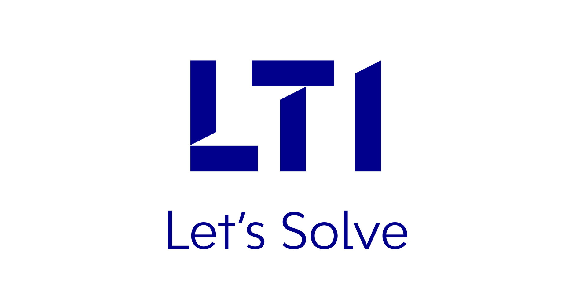

Work Experience

After completing my Undergraduate I worked at Larsen and Toubro Infotech as a Software Engineer from June 2021 to June 2022. Here my responsibilities included:
Working as a SQL developer and ETL tester in the Business and Finance Sector(BFS).
Dealing with reports, interfaces, enhancements, and forms.
Supporting the Delivery Unit in ETL, Data Analysis.
I also had an opportunity to work with Lab Systems, India as an Intern. My responsibilities included developing UI/UX for multiple mobile applications using Figma.
This internship was completed during my undergraduate.
 I was a part of the core Student Council for the academic year 2019-20, I was responsible for arranging Techical and non-technical events for over 1000 students. I was incharge of leading, supervising and organizing inter-collegiate fests.
I was a part of the core Student Council for the academic year 2019-20, I was responsible for arranging Techical and non-technical events for over 1000 students. I was incharge of leading, supervising and organizing inter-collegiate fests.